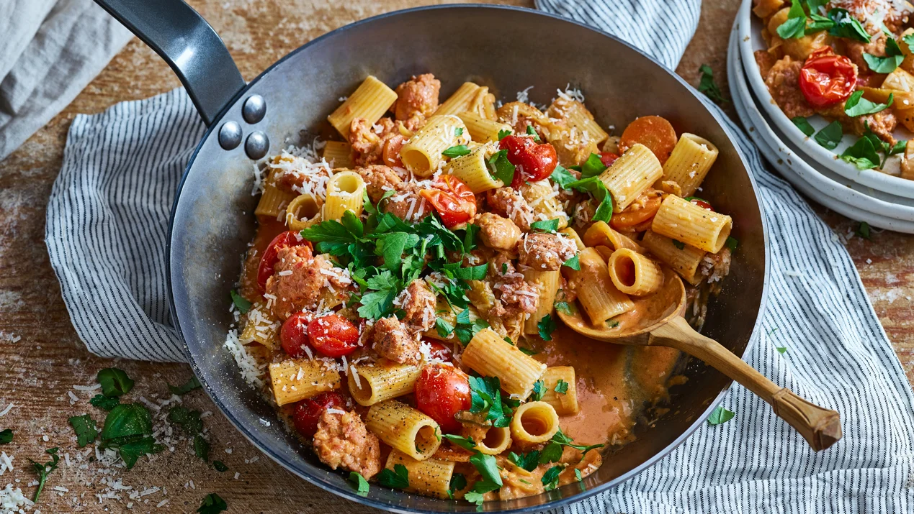

How to Salsiccia

Ingredienser
4 portioner
- 1st Schalottenlök
- 1st Morot
- 1st Fänkål
- 2st Vitlöksklyftor
- 10st Cocktailtomater
- 25g Svenskt Smör från Arla® Ekologiskt
- 300g Färsk salsiccia
- 300g Pasta rigatoni, gärna fullkorn
- 360g Tomatpuré
- 2msk Chili flakes
- 3dl Arla Ko® Syrad grädde
- ½ Strösocker
- 1tsk Salt
- 80g Parmesanost
- Bladpersilja
Gör så här
- Skala och skiva lök och morot tunt.
- Ansa och skiva fänkål.
- Finhacka vitlöken.
- Halvera tomaterna.
- Hetta upp smör i en stekpanna.
- Stek lök, morot, fänkål, vitlök och tomater ca 5 min.
- Skär ett snitt i salsiccan och ta ut fyllningen
- Lägg ner i stekgrytan och finfördela med trägaffel. Fräs 4-5 min.
- Rör ner tomatpuré, chili flakes, vin och grädde i stekgrytan med salsiccian..
- Sjud ca 10 min.
- Smaka av med socker och salt.
- Blanda ner avrunnen pasta i såsen.
Go back to main here.